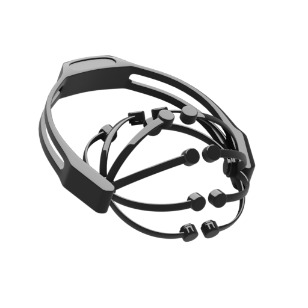

<ion-header class="mb-20">
  <div class="">
    <ion-toolbar>
      <ion-buttons slot="end">
        <ion-button (click)="disconnect()">
          <ion-icon slot="icon-only" name="power"></ion-icon>
        </ion-button>
      </ion-buttons>
      <ion-title><b>Connected</b><span class="o-5">device</span></ion-title>
    </ion-toolbar>
  </div>

  <div class="toolbar-menu">
    <div class="toolbar-menu-content">
      <div class="p-10">
        <h4 class="device-name primary">
          <b>{{ deviceService.connectedDevice.name }}</b>
        </h4>
        <ion-text color="medium">
          <p class="address">{{ deviceService.connectedDevice.address }}</p>
        </ion-text>
      </div>
    </div>
  </div>
</ion-header>

<ion-content>

  <div class="p-10 top-container">
    <div class="image-container">
      
    </div>
    
  </div>

  <div class="panel options">
    <ion-item lines="none">
      <ion-icon name="time" class="mr-10 medium-icon"></ion-icon>
      <ion-label>Frequency <ion-text color="danger">*</ion-text></ion-label>
      <ion-select placeholder="Select" [(ngModel)]="signalsPerSeconds">
        <ion-select-option value="128">128 Hz</ion-select-option>
        <ion-select-option value="64">64 Hz</ion-select-option>
        <ion-select-option value="32">32 Hz</ion-select-option>
        <ion-select-option value="16">16 Hz</ion-select-option>
        <ion-select-option value="8">8 Hz</ion-select-option>
        <ion-select-option value="4">4 Hz</ion-select-option>
        <ion-select-option value="2">2 Hz</ion-select-option>
        <ion-select-option value="1">1 Hz</ion-select-option>
      </ion-select>
    </ion-item>

    <ion-item lines="none">
      <ion-icon name="phone-portrait" class="mr-10 medium-icon"></ion-icon>
      <ion-label>Signals on screen <ion-text color="danger">*</ion-text></ion-label>
      <ion-select placeholder="Select" [(ngModel)]="maxLenDataOnScreen">
        <ion-select-option value="100">100</ion-select-option>
        <ion-select-option value="50">50</ion-select-option>
        <ion-select-option value="25">25</ion-select-option>
        <ion-select-option value="10">10</ion-select-option>
      </ion-select>
    </ion-item>

    <ion-item lines="none">
      <ion-icon name="cloud" class="mr-10 medium-icon"></ion-icon>
      <ion-label>Save to cloud <ion-text color="danger" *ngIf="cloudSaveEnabled">*</ion-text></ion-label>
      <ion-toggle [(ngModel)]="cloudSaveEnabled"></ion-toggle>
    </ion-item>

    <div class="cloud-info" *ngIf="cloudSaveEnabled">
      <ion-item lines="none">
        <ion-icon name="globe" class="mr-10 medium-icon"></ion-icon>
        <ion-label>Private record</ion-label>
        <ion-toggle [(ngModel)]="isPrivate"></ion-toggle>
      </ion-item>

      <ion-item lines="none">
        <ion-icon name="cloud-outline" class="mr-10 medium-icon"></ion-icon>
        <ion-input placeholder="Record name" [(ngModel)]="recordName"></ion-input>
      </ion-item>

      <ion-item lines="none" class="textare-section">
        <ion-icon name="create" class="mr-10 medium-icon"></ion-icon>
        <ion-textarea placeholder="Notes" [(ngModel)]="recordNotes"></ion-textarea>
      </ion-item>

    </div>

    <ion-button expand="block" (click)="start()" class="round">
      <ion-icon name="pulse" class="mr-10 medium-icon"></ion-icon>
      Start
    </ion-button>

  </div>
</ion-content>
